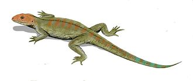

Reptiles, as most commonly defined, are the animals in the class Reptilia (/rɛpˈtɪliə/), a paraphyletic grouping comprising all sauropsid amniotes except Aves (birds).
Living reptiles comprise turtles, crocodilians, squamates (lizards and snakes) and rhynchocephalians (tuatara).
In the traditional Linnaean classification system, birds are considered a separate class to reptiles.
However, crocodilians are more closely related to birds than they are to other living reptiles, and so modern cladistic classification systems include birds within Reptilia, redefining the term as a clade.
Other cladistic definitions abandon the term reptile altogether in favor of the clade Sauropsida, which refers to all animals more closely related to modern reptiles than to mammals.
The study of the traditional reptile orders, historically combined with that of modern amphibians, is called herpetology.

There are three classifications of reptiles:
- Anapsid (A)
- Synapsid (B)
- Diapsid (C)